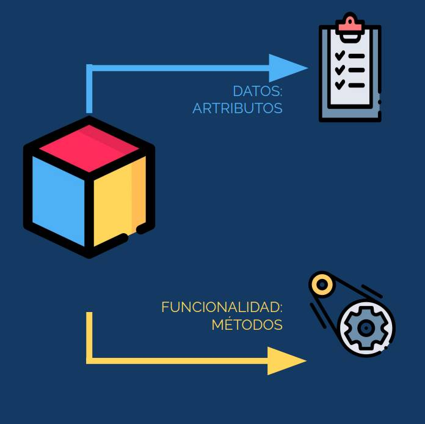

Què és un objecte?
Un objecte és una estructura que conté informació i accions que es poden fer amb eixa informació.
Pots imaginar un objecte com una caixa que té:
- Dades (com números, paraules, llistes…)
- Funcions (accions que pots fer amb eixes dades)
Exemple senzill:
Imagina un llapis com un objecte del món real:
- Informació:
color = "roig",llargària = 10 cm - Accions:
escriure(),dibuixar(),ferpunta()
En Python, això es pot representar així:
llapis1 = {
"color": "roig",
"llargaria": 10,
"escriure": lambda: print("Estic escrivint..."),
}
print(llapis1["color"]) # Mostra 'roig'
llapis1["escriure"]() # Crida l'acció: Estic escrivint...
En resum:
Un objecte és com una combinació de dades i comportament.
Et permet organitzar la informació i treballar amb ella d’una manera més clara i potent.
No cal saber com s’ha creat, només com utilitzar-lo.
Es poden crear diversos objectes iguals, però amb dades diferents: Cada objecte tindrà un nom diferent per a poder referir-se a ell. Així podrem tindre llapis1, llapis2, llapis3, ....
I tots son llapis, de la classe Llapis
Una classe és com un motle per a fer objectes. En la classe es definirà que dades (atributs) i que métodes tindran els objectes que es contruixquen amb eixa classe.
... en Python
En Python, un objecte és una entitat que conté dades (atributs) i comportaments (mètodes). Tot en Python és un objecte: nombres, cadenes, llistes, funcions, etc.
x = 5
print(type(x)) # < class 'int'>
Ací, x és un objecte de la classe int.
Classe: És un motle que permet crear un objecte.
Una classe és capaç de definir un objecte juntament amb les seues propietats (atributs)
i les seues modificacions (mètodes)
Objecte: És la instància d'una classe i consta de:
Estat. Representat pels atributs de l'objecte, que reflecteixen les seues propietats
Comportament. Representat pels mètodes de l'objecte, que reflecteixen la seua resposta a altres objectes
Un objecte en Python és una instància d’una classe i pot tindre:
- Atributs: Dades que descriuen les propietats de l’objecte.
- Mètodes: Funcions que defineixen el comportament de l’objecte.
Exemple bàsic:
cad1 = "Frase curta" # Crear objecte 'cad1' ==> instanciar objecte. La classe la detecta Python ( string )
print(cad1) # Accedir al valor, atribut
cad1 = cad1.upper(); # Executar mètode upper() ==> ()
Creació de Classes

Una classe és la plantilla o motle, o model que defineix com es creen els objectes d'exia classe.
Crear una classe
Per crear una classe en Python, utilitzes la paraula clau class . Ací tens un exemple bàsic:
En el següent exemple, la classe Cotxe servirà per a definir objectes (cotxes) amb tres atributs (dades) i un mètode
class Cotxe:
def __init__(self, marca, model, color):
self.marca = marca # Atribut marca
self.model = model # Atribut model
self.color = color # Atribut color
def descriure(self): # Mètode per descriure el cotxe
print(f"Aquest cotxe és un {self.color} {self.marca} {self.model}.")
En aquest exemple, hem creat una classe Cotxe amb tres atributs: marca, model i color. També hem definit un mètode descriure() per imprimir una descripció del cotxe.
Instàncies
Crear objectes (instàncies d'una classe)
el_meu_cotxe = Cotxe("Toyota", "Corolla", "roig")
altre_cotxe = Cotxe("Honda", "Civic", "blau")
En este codi, hem creat dues instàncies de la classe Cotxe: el_meu_cotxe i altre_cotxe. Cada objecte té els seus propis valors per als atributs, però comparteixen els mateixos mètodes definits a la classe.
Utilització
Per accedir a un mètode o un atribut d'un objecte, s'ha de posar el nom del objecte, seguit d'un punt (.) i seguit del nom del mètode o atribut
La diferència entre mètode i atribut es pot notar en que en el mètode sempre hi ha parèntesi () , i en l'atribut no
# Accedir als atributs i mètodes
print( el_meu_cotxe.marca ) # Output: Toyota . Després de marca no hi ha parèntesi
el_meu_cotxe.descriure() # Output: Aquest cotxe és un roig Toyota Corolla.
Atributs d’instància vs. atributs de classe
- Atributs d’instància: Són propietats específiques d’un objecte concret (definides al mètode
__init__). - Atributs de classe: Són compartits per totes les instàncies d’una mateixa classe.
Atributs d’instància
Són propis de cada objecte concret. Es defineixen dins del mètode __init__.
class Gos:
def __init__(self, nom, raça):
self.nom = nom
self.raça = raça
gos1 = Gos("Rex", "Labrador")
gos2 = Gos("Boby", "Pomerania")
print(gos1.nom) # Rex
print(gos2.nom) # Boby
Atributs de classe
Són compartits entre tots els objectes de la classe. Es defineixen fora del __init__.
class Gos:
pates = 4 # Atribut de classe
def __init__(self, nom):
self.nom = nom
gos1 = Gos("Rex")
gos2 = Gos("Boby")
print(gos1.pates) # 4
print(gos2.pates) # 4
print(Gos.pates) # 4 : no es nomena cap objecte concret
Comparació ràpida
| Tipus | On es defineix | És únic per objecte? | Exemple d'accés |
|---|---|---|---|
| Atribut d’instància | Dins de __init__ |
✅ Sí | self.nom |
| Atribut de classe | Fora de __init__ |
❌ No | Classe.nom o self.nom |
Exemple combinat
class Cotxe:
rodes = 4 # Atribut de classe
def __init__(self, marca):
self.marca = marca # Atribut d’instància
cotxe1 = Cotxe("Toyota")
cotxe2 = Cotxe("Ford")
print(cotxe1.marca) # Toyota
print(cotxe2.marca) # Ford
print(cotxe1.rodes) # 4
print(cotxe2.rodes) # 4
🧱 Constructors en Python
Què és un constructor?
Un constructor és un mètode especial que s'executa automàticament quan crees un objecte. En Python, aquest mètode es diu __init__.
🧩 Sintaxi bàsica
class Persona:
def __init__(self, nom, edat):
self.nom = nom
self.edat = edat
__init__→ és el constructorself→ fa referència a l'objectenomiedat→ són paràmetres
🧪 Exemple complet
class Persona:
def __init__(self, nom, edat):
self.nom = nom
self.edat = edat
def saludar(self):
print(f"Hola, sóc {self.nom} i tinc {self.edat} anys.")
persona1 = Persona("Anna", 30)
persona1.saludar() # Hola, sóc Anna i tinc 30 anys.
🔄 Constructor amb valors per defecte
class Llibre:
def __init__(self, titol, autor="Desconegut"):
self.titol = titol
self.autor = autor
llibre1 = Llibre("El Petit Príncep")
print(llibre1.autor) # Desconegut
⚠️ Coses a tenir en compte
- El constructor sempre es diu
__init__. - No cal cridar-lo directament, Python ho fa automàticament.
- Pots posar valors per defecte als paràmetres.
❌ No es poden definir múltiples constructors com en altres llenguatges com Java o C++, perquè Python no suporta sobrecàrrega de mètodes de forma nativa.
Alternatives
- Ús de valors per defecte (vist abans)
- Detectar arguments amb *args i **kwargs
exemple
class Persona:
def __init__(self, *args):
if len(args) == 0:
self.nom = "Desconegut"
self.edat = 0
elif len(args) == 1:
self.nom = args[0]
self.edat = 0
elif len(args) == 2:
self.nom = args[0]
self.edat = args[1]
else:
raise ValueError("Massa arguments")
p1 = Persona()
p2 = Persona("Anna")
p3 = Persona("Joan", 35)
📦 Llibreries d’objectes en Python
En Python, una llibreria d’objectes és una col·lecció de codi (funcions, classes, constants...) que ens proporciona classes ja fetes per treballar amb objectes directament.
Exemple bàsic: datetime
import datetime
ara = datetime.datetime.now()
print(ara.year) # Mostra l'any actual
print(ara.month) # Mostra el mesAquí, datetime.datetime.now() retorna un objecte amb atributs útils per gestionar dates i hores.
Llibreries comunes amb objectes útils
| Llibreria | Ús principal | Exemple d'objecte |
|---|---|---|
datetime |
Dates i hores | datetime.datetime |
random |
Números aleatoris | random.Random() |
tkinter |
Interfícies gràfiques (GUI) | tk.Tk() |
math |
Funcions matemàtiques | Constants i funcions |
json |
Treball amb fitxers JSON | json.loads() |
✅ Exemple amb random
import random
nombre = random.randint(1, 10)
print(f"Has obtingut el número {nombre}")Aquí, randint és un mètode que forma part d’un objecte de la llibreria random.
En resum
- Una llibreria d'objectes conté classes i mètodes predefinits.
- Permet treballar amb funcionalitats avançades sense reinventar la roda.
- Els objectes encapsulen dades i accions útils.
🧹 Destrucció d’objectes i alliberament de memòria en Python
Què és la destrucció d’un objecte?
Quan un objecte ja no té cap referència, Python el destrueix i allibera la memòria automàticament mitjançant el garbage collector.
🔧 Mètode especial __del__()
Pots definir el mètode __del__() per executar accions quan un objecte es destrueix.
class Persona:
def __init__(self, nom):
self.nom = nom
print(f"Objecte creat: {self.nom}")
def __del__(self):
print(f"Objecte destruït: {self.nom}")
p = Persona("Anna")
del p # Força la destruccióAlliberament automàtic de memòria
- Python té un sistema automàtic de recollida d’objectes inútils (garbage collector).
- Quan un objecte ja no és necessari, s’allibera la memòria que ocupava.
Exemple amb funció
def crear_persona():
p = Persona("Joan")
crear_persona()
# Quan surt de la funció, l’objecte s’elimina automàticament🛠️ Forçar el garbage collector
import gc
gc.collect() # Força la neteja de memòria⚠️ Notes sobre l’ús de __del__()
- Evita usar-lo si no és estrictament necessari.
- Pot causar problemes en cicles de referència o en l’ordre de destrucció.
- Millor fer servir
withotry/finallyper tancar recursos.